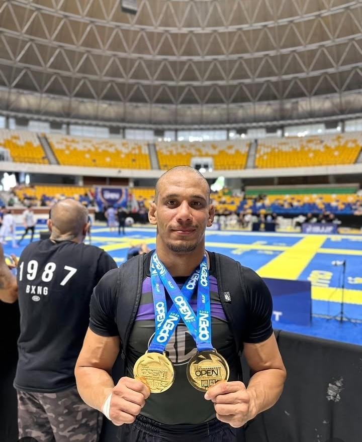

Controle e técnica
O treino explora posições, transições, controles e finalizações com progressão.
Jiu-Jitsu no Valentina, João Pessoa
Treine Jiu-Jitsu no Valentina, em João Pessoa, com acompanhamento técnico para desenvolver posições, controle, raspagens e finalizações no tatame.
Para quem é indicada
Benefícios da modalidade
O treino explora posições, transições, controles e finalizações com progressão.
Movimentações, base e conexão com o parceiro ajudam a desenvolver consciência corporal.
A prática valoriza atenção, respeito ao parceiro e constância no aprendizado.
Como funciona o primeiro treino
Fale com a equipe para entender como participar do primeiro treino.
Quem acompanha seu treino

Jiu-Jitsu · NoGi
Anderson conduz as aulas de Jiu-Jitsu e NoGi com técnica, disciplina e paixão pelo esporte.
Horários de Jiu-Jitsu
Confira a grade atual da modalidade. Para confirmar disponibilidade, fale com a equipe.
Estrutura e metodologia
Na ECVO, o Jiu-Jitsu é apresentado como uma prática técnica de chão, com espaço para quem treina de forma recreativa e para quem quer avançar no esporte.
Onde treinar
Escola de Combate Vinicius de Oliveira
R. Inspetora Emilia Mendonca Gomes, 195 - Valentina
João Pessoa, PB · CEP 58064-360
Dúvidas sobre Jiu-Jitsu
Não. Fale com a equipe para encontrar a turma de Jiu-Jitsu mais adequada ao seu momento.
A equipe informa o que levar e quais equipamentos fazem sentido antes do seu primeiro treino.
No Jiu-Jitsu com kimono, a roupa faz parte das pegadas e controles. No NoGi, a luta acontece sem kimono, com uma dinâmica diferente de movimentação e controle.
A ECVO recebe alunos em diferentes níveis. Confirme pelo WhatsApp o horário mais indicado para começar.
Jiu-Jitsu na ECVO
Chame a equipe, confirme o horário e comece com orientação.